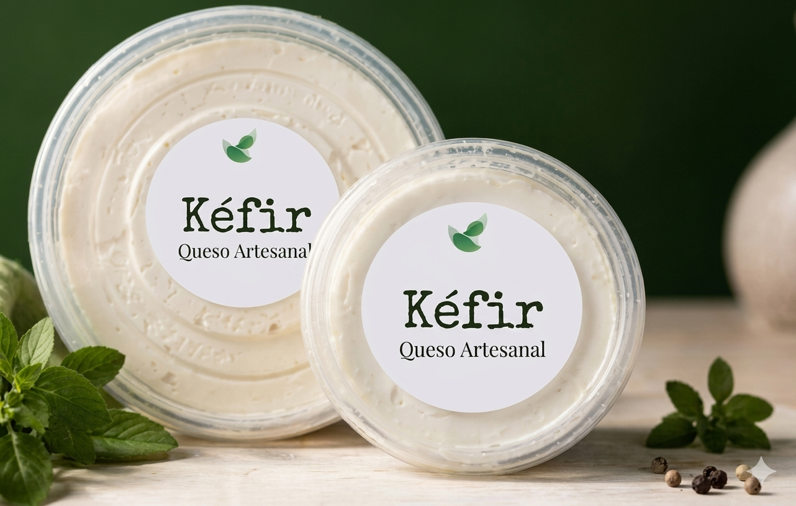
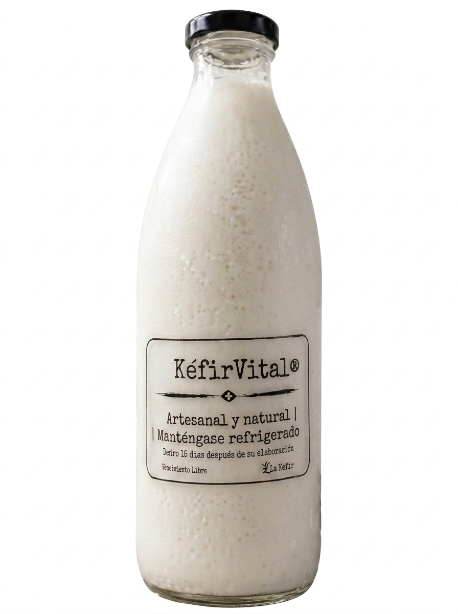
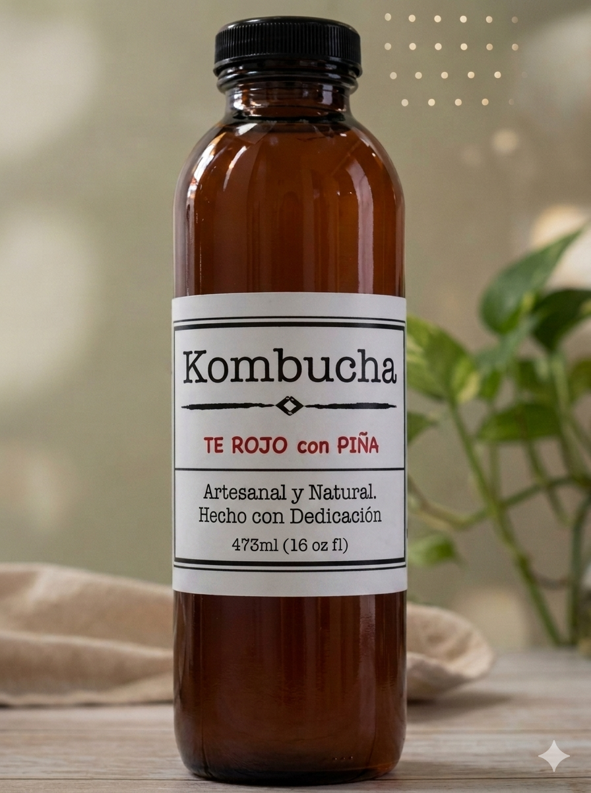

Kéfir artesanal 100% orgánico, cargado de probióticos vivos para tu bienestar diario.
Prueba el tuyoMiles de millones de bacterias benéficas activas.
Fermentado pacientemente sin químicos ni aditivos.
Mejora la absorción de nutrientes esenciales.
Contribuye a fortalecer tu sistema inmunológico de forma natural.
Ayuda a mantener un balance saludable e inhibe bacterias no deseadas.
Favorece la producción natural de vitaminas esenciales para tu cuerpo.
Mejora la capacidad de tu cuerpo para aprovechar los antioxidantes de tu dieta.
Favorece los procesos naturales de tu cuerpo para eliminar toxinas.
Su efecto metabólico puede contribuir a niveles más saludables de colesterol.

Cremoso, suave y lleno de probióticos vivos. Ideal para untar o acompañar tus comidas favoritas.

Nuestra bebida clásica de kéfir de leche, artesanal y natural, refrigerada para conservar todo su valor probiótico.

Refrescante fermentado artesanal, hecho con dedicación. Presentación de 473ml.
¿Tienes dudas o quieres hacer un pedido? Escríbenos.